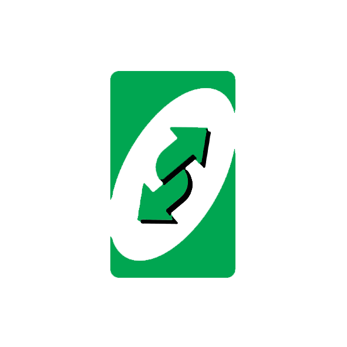
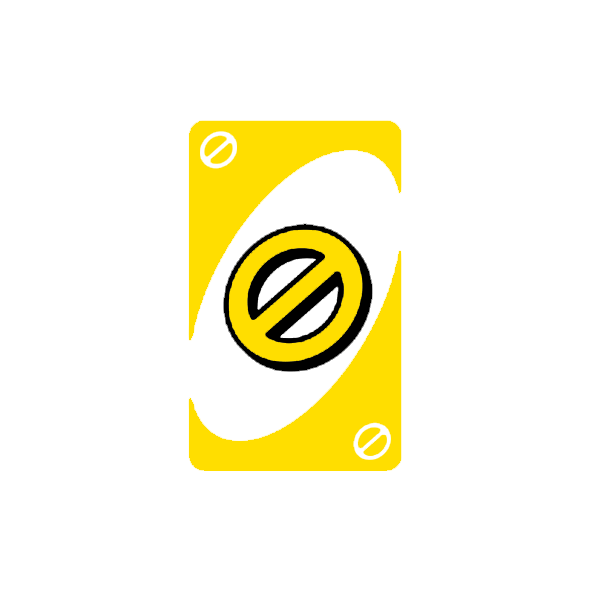
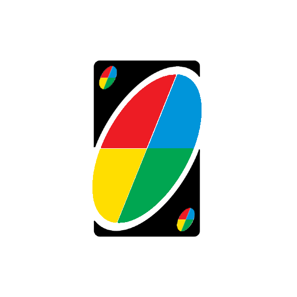
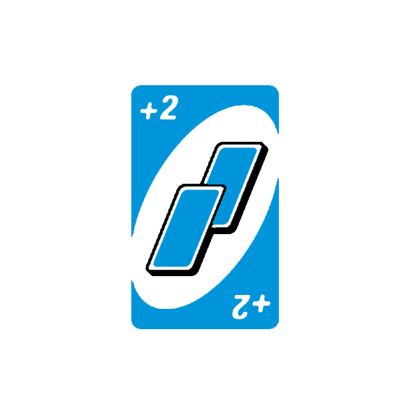
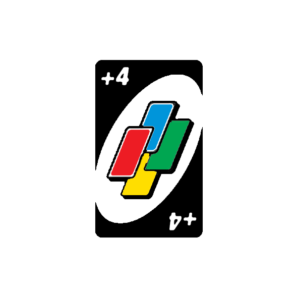

CARTAS
 Carta numérica
Carta numéricaCambio de sentido
Bloqueo
Cambio de color
Más dos
Más cuatro
Es el clásico juego de cartas que mezcla habilidad y velocidad. Los jugadores se turnan para hacer coincidir una carta de su mano con la actual que se muestra en la parte superior de la baraja, ya sea por color o por número.
Ser el primer jugador en anotar 500 puntos. La manera de anotar puntos consiste en quedarse sin cartas antes que el resto de jugadores. El ganador contabiliza puntos a su favor por las cartas que les quedan en la mano a los demas jugadores al finalizar la partida.
Las cartas sobrantes se colocan en el centro de la mesa formando el montón. Se de la vuelta a la carte
superior del montón, colocándola boca arriba al lado de mismo, esta será la pila de descarte. Si dicha
carta es una carta especial, se debe tener en cuenta su efecto (detallado en la sección “Cartas
especiales”).
Empieza la partida el jugador que se encuentra situado a la derecha del que ha repartido, jugando una
carta de su mano de coincida en número, color o símbolo, con la carta que se giró para formar la pila de
descarte. Por ejemplo, si dicha carta es un 7 rojo, el jugador debe jugar una carta roja o un 7 de
cualquier color. Tambien puede descartarse de un COMODÍN (ver la sección “Cartas especiales”).
Si en algún momento de la partida, un jugador no puede jugar ninguna de las cartas de su mano por no
coincidir con la última de la pila de descarte, está obligado a robar una carta del montón, pudiéndola
jugar inmediatamente. Si esta carta tampoco coincide en número, color o símbolo con la última de la pila
de descarte, se quederá con la carta y el tumo pasará el siguiente jugador.
Un jugador en su turno podrá decidir no jugar una de las cartas de su mano, aunque esta coincida en
número, color o símbolo con la última de la pila de descarte. En este caso, debe robar una carta del
montón, pudiéndola jugar inmediatamente. Después de robar, sólo puede jugar la carta que ha robado, le
está prohibido descartarse de unas de las cartas que ya tenía en la mano.
Cuando un jugador juega su penúltima carta, deberá decir en voz alta “¡UNO!”, para avisar al resto de
jugadores de que puede ganar en el próximo turno. Si no lo hace, tendrá que robar 2 cartas del montón,
pero sólo si los demás jugadores le pillan (ver sección “PENALIZACIONES”).
La partida termina cuando un jugador se queda sin cartas. Entonces se suman los puntos (ver sección
“PUNTUACIÓN”) y se empieza una nueva partida.
Si la última carta que se juega es una carta especial “Roba Dos” o “ Comodín Roba Cuatro”, el siguiente
jugador está obligado a robar dos o cuatro cartas respectivamente, que se contarán al contabilizar su
puntuación.
En el caso de que se terminen todas las cartas del montón y ningún jugador haya ganado, se barajarán
todas las cartas de la pila de descarte menos la última y se colocarán como montón para continuar la
partida.
Carta numérica